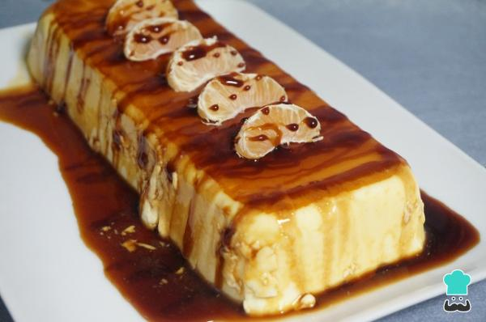
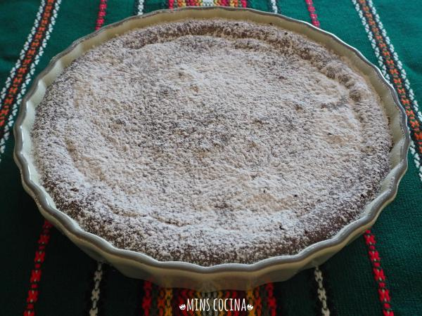

<!DOCTYPE html>
<html>
<head lang="en">
<meta name="viewport" content="width=device-width, user-scalable=no"/>
    <title>Pastry</title>
<link rel="stylesheet" type="text/css" href="Estilos.CSS">
    <body>
    <div class="cabecera">
        <center></center>
    </div>
    </body>
    
    
     <body background="25120819-cerrar-un-fondo-de-coloridos-dulces-de-caramelos-de-azucar.jpg"> 
     </body>
        <body><a href="ingles.html"></a></body>
    <form>
    <div class="contenido">
         <center><h1><font face="Comic Sans MS,arial,verdana"size=5>Orange cake</font></h1></center>
          <center><a href="/"></a></center>
         <center><h1><font face="Comic Sans MS,arial,verdana"size=5>Ingredients</font></h1></center>
         <center><h1><font face="Comic Sans MS,arial,verdana"size=4>500 milliliters of orange juice, 400 milliliters of whipped cream (2 cups), 350 grams of condensed milk, 10 gelatin leaves, 1 can of liquid caramel, 1 unit of orange or tangerine to decorate.</font></h1></center>
        
         <center><h1><font face="Comic Sans MS,arial,verdana"size=5>Preparation</font></h1></center>
        <center><h1><font face="Comic Sans MS,arial,verdana"size=4>We prepare the ingredients.</font></h1></center>
        <center><h1><font face="Comic Sans MS,arial,verdana"size=4>We put the gelatin sheets in a container with water for 5 minutes or as long as the manufacturer orders.</font></h1></center>
        <center><h1><font face="Comic Sans MS,arial,verdana"size=4>Squeeze the oranges until you get 500 ml of juice.</font></h1></center>
        <center><h1><font face="Comic Sans MS,arial,verdana"size=4>In a small pot or saucepan we put the juice, the cream and the condensed milk. We put it on low heat and stir until it is hot.</font></h1></center>
        <center><h1><font face="Comic Sans MS,arial,verdana"size=4>When the previous mixture is hot add the gelatin sheets perfectly drained and stir with a custard tongue or wooden spoon until they dissolve. Remove from fire.</font></h1></center>
        <center><h1><font face="Comic Sans MS,arial,verdana"size=4>In a mold where we want to make the orange and jelly cake we put the liquid caramel evenly distributed.</font></h1></center>
        <center><h1><font face="Comic Sans MS,arial,verdana"size=4>We incorporate the cream of the orange cake without an oven and put it in the refrigerator a minimum of 5-6 hours so that it sets well, or even better from one day to the next.</font></h1></center>
        <center><h1><font face="Comic Sans MS,arial,verdana"size=4>At the time of serving, we put the orange cake without oven in a dish and accompany it with an orange or a mandarin above for example.</font></h1></center>
        <center><h1><font face="Comic Sans MS,arial,verdana"size=4>And we have ready the orange cake without oven to serve when you like.</font></h1></center>
    </div>
    
     <div class="contenido">
         <center><h1><font face="Comic Sans MS,arial,verdana"size=5>Cake of chocolate and nuts without flour</font></h1></center>
         <center><a href="/"></a></center>
        <center><h1><font face="Comic Sans MS,arial,verdana"size=5>Ingredients</font></h1></center>
        <center><h1><font face="Comic Sans MS,arial,verdana"size=4> 120 grams of dark chocolate for desserts (mine without sugar), 90 grams of butter, 1 tablespoon full of pure cocoa powder without sugar, 85 grams of sugar (and equal equivalent sweetener), 10 grams of plain yogurt (I put it skimmed) (optional), 20 grams of flour (I put it in oatmeal), 60 grams of peeled nuts, ½ teaspoon vanilla essence dessert, ¼ teaspoon salt dessert, 1 pinch of cinnamon.</font></h1></center>
        <center><h1><font face="Comic Sans MS,arial,verdana"size=4>In a bowl, melt the butter and add the chocolate in pieces and the cocoa. Mix until homogeneous.</font></h1></center>
        <center><h1><font face="Comic Sans MS,arial,verdana"size=4>Separate the yolks and whites from the 3 eggs. In the bowl of the yolks, add the sugar, vanilla, salt and cinnamon, and beat until you get a smooth and homogeneous mixture.</font></h1></center>
        <center><h1><font face="Comic Sans MS,arial,verdana"size=4>On the other hand, we mount the whites to the point of snow.</font></h1></center>
        <center><h1><font face="Comic Sans MS,arial,verdana"size=4>We add the mixture of chocolate and yogurt to the bowl of the yolks, and beat.</font></h1></center>
        <center><h1><font face="Comic Sans MS,arial,verdana"size=4>Next, add the sifted flour and nuts, which previously we have ground with a food processor. We mix</font></h1></center>
        <center><h1><font face="Comic Sans MS,arial,verdana"size=4>Finally, we add the whites carefully, with enveloping movements to avoid losing the air inside.</font></h1></center>
        <center><h1><font face="Comic Sans MS,arial,verdana"size=4>Pour the mixture into a greased mold and bake the cake of chocolate and nuts in the oven and heat at 180 ºC for about 20 minutes to obtain a moist consistency, which is what I did. If we want something drier, we leave it 5 or 10 minutes more.</font></h1></center>
        <center><h1><font face="Comic Sans MS,arial,verdana"size=4>Finally, after removing the cake of nuts and chocolate without flour from the oven and when it is completely cold, before serving, sprinkle over sugar (or sweetener glas).</font></h1></center>
</div>
    
    </form>
    </head>
</html>
